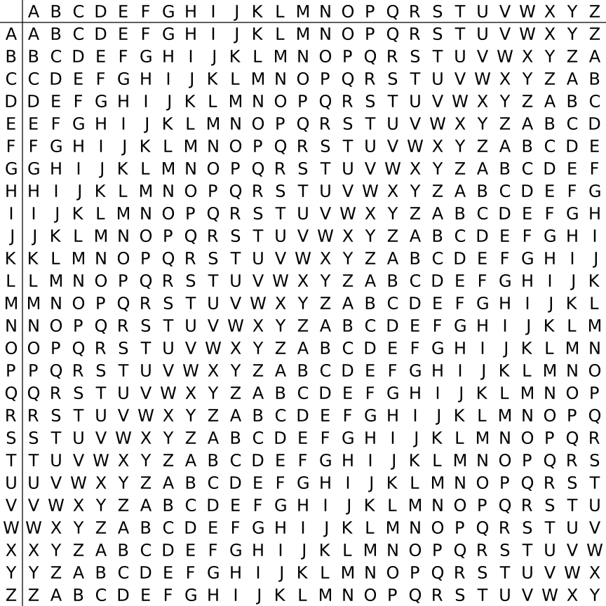

EN | ZH For multi-table replacement encryption, the encrypted letters almost no longer maintain the original frequency, so we can only use the algorithm to achieve the corresponding weakness to crack.
Playfair
Principle
The Playfair cipher or Playfair square is a replacement password, invented by the British Charles Wheatstone in 1854. The basic algorithm is as follows:
- Select a string of English letters, remove the repeated letters, and add the remaining letters one by one to the 5 × 5 matrix. The remaining space is added by the unjoined English letters in the order of az. Note that q is removed, or i and j are treated as the same word.
- Divide the plaintext to be encrypted into two groups. If the letters in the group are the same, add X (or Q) to the first letter of the group and regroup. If there is one word left, also add X.
- In each group, find out where the two letters are in the matrix.
- If the two letters have different rows and different columns, find the other two letters in the matrix (the first letter corresponds to the row first), so that the four letters become the four corners of a rectangle.
- If the two letters are accompanied, take the letters to the right of the two letters (if the letter is at the far right, take the leftmost letter).
- If the two letters are in the same column, take the letters below the two letters (if the letter is at the bottom, take the top letter).
The two newly found letters are the result of the original two-letter encryption.
Use playfair example as the key, get
P L A Y F
iREX
B C D G H
K N O Q S
T U V W Z
The message to be encrypted is Hide the gold in the tree stump
THAT IS TH EG OL DI NT HE TR EX IS YOUR MP
Will get
BM OD ZB XD WILL BE DM UI XM FOR UV IF
Tools
- CAP4
, Polybius
Principle
Polybius passwords are also known as board passwords, which are generally used to encrypt a given plaintext into a pair of numbers.
| | 1 | 2 | 3 | 4 | 5 |
| :--- | --- | --- | --- | --- | :--- |
| 1 | A | B | C | D | E |
| 2 | F | G | H | I/J | K |
| 3 | L | M | N | O | P |
| 4 | Q | R | S | T | U |
| 5 V W | X Y | Z |
For example, plain text HELLO, encrypted is 23 15 31 31 34.
Another password table
| | A | D | F | G | X |
| --- | --- | --- | --- | --- | --- |
| A | b | t | a | l | p |
| D | d | h | o | z | k |
| F | q | f | v | s | n |
| G | g | j | c | u | x |
| X | m | r | e | w | y |
Note that the order of the letters here is upset.
The origin of ADFGX:
> In 1918, when the First World War was about to end, the French army intercepted a German telegram. All the words in the message were composed of five letters A, D, F, G, and X, hence the name ADFGX. . The ADFGX password was invented by German Colonel Fritz Nebel in March 1918 and is a dual encryption scheme that combines Polybius passwords and replacement passwords.
For example, HELLO, using this form of encryption, is DD XF AG AG DF.
Tools
- CrypTool
Examples
Here is an example of the An Heng Cup September Crypto competition Go. The title is:
> 密 文 ：
> The zip package gives a line of hex: 546865206c656e677468206f66207468697320706c61696e746578743a203130
> Please decrypt the ciphertext
First, hexadecimal hexadecimal decoding, get the string: "The length of this plaintext: 10"
The length of the ciphertext is 20, and the length of the plaintext is 10. The ciphertext has only five characters: "l", "i", "n", "k", "e", which is associated with the chessboard password.
First try the five characters in alphabetical order:
| e | i | k | l | n | |
|---|---|---|---|---|---|
| e | A | B | C | D | E |
| i | F | G | H | I/J | K |
| k | L | M | N | O | P |
| l | Q | R | S | T | U |
| n | V | W | X | Y | Z |
Decrypted according to ciphertext: iytghpkqmq.
This should not be the flag answer we want.
It seems that the five-character arrangement is not arranged in this way. There are a total of 5!
import itertools
key = []
cipher = "ilnllliiikkninlekile"
for i in itertools.permutations('ilnke', 5):
key.append(''.join(i))
for now_key in key:
solve_c = ""
true = ""
for now_c in cipher:
solve_c += str(now_key.index(now_c))
for i in range(0,len(solve_c),2):
now_ascii = int(solve_c[i])*5+int(solve_c[i+1])+97
if now_ascii>ord('i'):
now_ascii+=1
res += chr(now_ascii)
if "flag" in res:
print now_key,res
The script is actually the algorithm for implementing the checkerboard password, but the order of the five characters is not fixed.
Run the following two results:
> linke flagishere
> lines flagkxhdwd
Obviously the first one is the answer we want.
Attach the correct password form:
| l | i | n | k | e | |
|---|---|---|---|---|---|
| l | A | B | C | D | E |
| i | F | G | H | I/J | K |
| n | L | M | N | O | P |
| k | Q | R | S | T | U |
| e | V W | X Y | Z |
Vigenere Virginia Password
Principle
The Virginia code (Vigenere) is an encryption algorithm that uses a series of Caesar ciphers to form a cipher alphabet, a simple form of multi-table ciphers.

An example is given below
Clear text: come greatwall
Key: crypto
First, the key is padded to the same length as the plaintext.
| 明文 | c | o | m | e | g | r | e | a | t | w | a | l | l |
|---|---|---|---|---|---|---|---|---|---|---|---|---|---|
| 密钥 | c | r | y | p | t | o | c | r | y | p | t | o | c |
Second, check the ciphertext

Clear text: come greatwall
Key: crypto
Ciphertext: efkt zferrltzn
破
The deciphering of all multi-table ciphers, including the Virginia code, is based on the frequency of letters, but direct frequency analysis does not apply because in the Virginia code, a letter can be Encrypted into different ciphertexts, so simple frequency analysis is not useful here.
The key to deciphering a Virginia password is that its key is cyclically repeated. If we know the length of the key, the ciphertext can be seen as an interlaced Caesar cipher, and each of them can be cracked separately. Regarding the length of the password, we can use the Kasiki test and the Friedman test to get it.
The Kasiki test is based on the fact that common words like the one may be encrypted by the same key letter and thus repeated in the ciphertext. For example, different CRYPTOs in plaintext may be encrypted into different ciphertexts by the key ABCDEF:
Key: ABCDEF AB CDEFA BCD EFABCDEFABCD
明文：CRYPTO IS SHORT FOR CRYPTOGRAPHY
密文：CSASXT IT UKSWT GQU GWYQVRKWAQJB
The elements repeated in the plaintext at this time are not repeated in the ciphertext. However, if the keys are the same, the result might be (using the key ABCD):
密钥 ： ABCDAB CD ABCDA BCD ABCDABCDABCD
明文：CRYPTO IS SHORT FOR CRYPTOGRAPHY
密 文: CSASTP KV SIQUT GQU CSASTPIUAQJB
At this point, the Kasiki test can produce results. This method is more efficient for longer paragraphs because there are usually more repeating fragments in the ciphertext. The length of the key can be deciphered by the following ciphertext:
密文：DYDUXRMHTVDVNQDQNWDYDUXRMHARTJGWNQD
Among them, the appearance of two DYDUXRMH is separated by 18 letters. Therefore, it can be assumed that the length of the key is a divisor of 18, that is, the length is 18, 9, 6, 3 or 2. The two NQDs are 20 letters apart, meaning the key length should be 20, 10, 5, 4 or 2. Taking the intersection of the two, the key length can be basically determined to be 2. The next step is to proceed further.
For more detailed cracking principles, I will not do too much introduction here. See http://www.practicalcryptography.com/cryptanalysis/stochastic-searching/cryptanalysis-vigenere-cipher/.
Tools
- Known key
- Python's pycipher library
-
[Online decryption Vigenère cipher] (http://planetcalc.com/2468/)
- CAP4
-
Unknown key
-
[Vigenere Solver] (https://www.guballa.de/vigenere-solver) is not perfect.
Nihilist
Principle
The Nihilist password is also known as the keyword password: plain text + keyword = cipher text. Take the keyword helloworld as an example.
First construct a checkerboard matrix using a key (similar to a Polybius password) - Create a new 5 × 5 matrix - Fill characters into the matrix without repeating them in order - The rest is filled in alphabetical order - the letters i and j are equivalent
| | 1 | 2 | 3 | 4 | 5 |
| --- | --- | --- | ----- | --- | --- |
| 1 | h | e | l | of | w | | 2 | r | d | a | b | c |
| 3 | f | g | i / j | k | m |
| 4 | n | p | q | s | t |
| 5 | u | v | x | y | z |
Encrypt the encryption process reference matrix M:
a -> M[2,3] -> 23
t -> M[4,5] -> 45
For the decryption process
Decrypt with reference matrix M:
23 -> M[2,3] -> a
45 -> M[4,5] -> t
It can be seen that the characteristics of ciphertext have the following points
- pure numbers
- only 1 to 5
- Even ciphertext length.
Hill
Principle
Hill (Hill) uses the order of each letter in the alphabet as its corresponding number, ie A=0, B=1, C=2, etc., and then converts the plaintext into an n-dimensional vector, followed by an n × n The matrix is multiplied and the resulting result is modulo 26. Note that the matrix used for encryption (ie, the key) must be reversible at $\mathbb{Z}_{26}^{n}$, otherwise it is impossible to decode. Only the determinant of the matrix and the 26 prime are reversible. Here is an example
Clear text: ACT
Ming culture is a matrix.
$$
\begin{bmatrix}
0\
2\
19
\end{bmatrix}
$$
Suppose the key is:
$$
\begin{bmatrix}
6 & 24 & 1\
13 & 16 & 10\
20 & 17 & 15
\end{bmatrix}
$$
The encryption process is:
$$
\begin{bmatrix}
6 & 24 & 1\
13 & 16 & 10\
20 & 17 & 15
\end{bmatrix}
\begin{bmatrix}
0\
2\
19
\end{bmatrix}
\equiv
\begin{bmatrix}
67\
222\
319
\end{bmatrix}
\equiv
\begin{bmatrix}
15\
14\
7
\end{bmatrix}
\ Way 26 $$
Ciphertext is
Ciphertext: POH
Tools
-
http://www.practicalcryptography.com/ciphers/hill-cipher/
-
CAP4
-
Cryptool
Examples
Here we take ISCC 2015 base decrypt 150 as an example, the title is
> ciphertext: 22,09,00,12,03,01,10,03,04,08,01,17 (wjamdbkdeibr)
> The matrix used is 1 2 3 4 5 6 7 8 10
> Please decrypt the ciphertext.
First, the matrix is 3 × 3 . Description Encrypts 3 characters each time. We use Cryptool directly. It should be noted that this matrix is arranged in columns. That is as follows
1 4 7
2 5 8
3 6 10
The final result is overthehillx.
AutokeyCipher
Principle
Autokey Cipher is also a multi-table replacement password, similar to a Virginia password, but uses a different method to generate a key. It is generally safer than a Virginia password. There are two main types of automatic key passwords: keyword automatic key password and original automatic key password. Let's take the keyword automatic key as an example:
明文：THE QUICK BROWN FOX JUMPS OVER THE LAZY DOG
Keywords: CULTURE
Automatically generate a key:
CULTURE THE QUICK BROWN FOX JUMPS OVER THE
The next encryption process is similar to the Virginia password, available from the corresponding table:
Ciphertext
VBP JOZGD IVEQV HYY AIICX CSNL FWW ZVDP WVK
Tools
- Known keywords
- Python's pycipher library
-
Unknown keywords
- http://www.practicalcryptography.com/cryptanalysis/stochastic-searching/cryptanalysis-autokey-cipher/
-
break_autokey.py under the tools folder, to be completed.